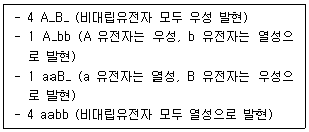
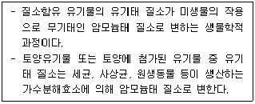
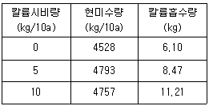

임업종묘기사 (2020-08-22 기출문제)
1과목: 조림학
1. 인공조림의 특징으로 옳은 것은?
- 동령단순림 형성이 많다.
- 주로 택별작업지에 실시된다.
- 다양한 규격의 목재 생산이 용이하다.
- 천연갱신에 비해 성숙림이 늦게 이루어진다.
(정답률: 알수없음)

2. 양료간에 흡수를 상호 촉진하는 비료 성분으로 올바르게 짝지어진 것은?
- 철 - 망간
- 칼륨 - 칼슘
- 인산 - 마그네슘
- 칼륨 – 마그네슘
(정답률: 알수없음)
3. 순림에 대한 설명으로 옳은 것은?
- 입지 자원을 골고루 이용할 수 있다.
- 경제적으로 가치 있는 나무를 대량으로 생산할 수 있다.
- 숲의 구성이 단조로우며 병충해, 풍해에 대한 저항력이 강하다.
- 침엽수로만 형성된 순림에서는 임지의 악화가 초래되는 일이 없다.
(정답률: 알수없음)
4. 일반적으로 파종 1년 후에 판갈이 작업을 실시하는 것이 좋은 수종으로만 올바르게 나열한 것은?
- 삼나무, 전나무
- 소마누, 잣나무
- 소나무, 일본잎갈나무
- 전나무, 독일가문비나무
(정답률: 알수없음)
5. 빛과 관련된 수목 생리에 대한 설명으로 옳은 것은?
- 우리나라에서 자라는 대부분의 활엽수는 C4 식물군에 속한다.
- 엽록체 내에서 광에너지를 이용한 광반응이 일어나는 곳은 스트로마(stroma)이다.
- 내음성은 동일 수종이라도 수목의 연령이나 생육조건 등에 따라서 변할 수 있다.
- 수목 한 개체 내에서는 양엽이나 음엽에 상관없이 광보상점이나 광포화점이 동일하다.
(정답률: 알수없음)
6. 생가지치기를 하여도 부후의 위험성이 거의 없는 수종으로만 올바르게 나열한 것은?
- 편백, 포플러
- 벚나무, 느릅나무
- 삼나무, 물푸레나무
- 자작나무, 단풍나무
(정답률: 알수없음)
7. 수목 잎의 기공에 대한 설명으로 옳지 않은 것은?
- 잎의 수분포텐셜이 낮아지면 기공이 닫힌다.
- 온도가 30℃ 이상으로 상스아면 기공이 닫힌다.
- 기공이 열리는데 필요한 광도는 순광합성이 가능한 광도이면 된다.
- 엽육 세포 내부의 이산화탄소 농도가 높아지면 기공이 열린다.
(정답률: 알수없음)
8. 묘목의 연령표시에 대한 설명으로 옳지 않은 것은?
- 1/2묘 : 뿌리는 1년, 줄기는 2년된 삽목묘
- 1-0묘 : 판갈이를 하지 않고 1년이 경과한 실생묘목
- 1-1묘 : 파종상에서 1년, 판갈이하여 1년이 경과된 2년생 묘목
- 2-1-1묘 : 파종상에서 2년, 판갈이하여 1년, 다시 판갈이하여 1년을 지낸 4년생 묘목
(정답률: 알수없음)
9. 간벌에 대한 설명으로 옳지 않은 것은?
- 정성간벌은 임목본수와 현존량으로 결정한다.
- 수액 이동 정지기인 겨울과 봄에 실시하는 것이 좋다.
- 수목의 생장량이 증가함에 따라 생육 공간 조절을 위해 실시한다.
- 지위가 '상'이면 활엽수종의 간벌 개시시기는 임령이 20~30년일 때부터이다.
(정답률: 알수없음)
10. 우리나라에서 한대림의 특징 수종이 아닌 것은?
- Larix olgensis
- Picea jezoensis
- Taxus cuspidata
- Quercus myrsinaefolia
(정답률: 알수없음)
11. 일반적으로 연료재와 소경제, 일반용재를 동일 임지에서 생산하는 산림작업종은?
- 군상개벌
- 모수작업
- 왜림작업
- 중림작업
(정답률: 알수없음)
12. 토양 수분에 대한 설명으로 옳지 않은 것은?
- 토양의 모세관수는 수목이 이용할 수 있다.
- 토양 수분이 포화 상태일 때의 pF는 3.8 이다.
- 토양의 수분포텐셜은 포화 상태로부터 건조해짐에 따라 낮아진다.
- 위조점은 토양 수준의 부족으로 수목이 시들기 시작하는 수분상태를 말한다.
(정답률: 알수없음)
13. 종자의 후숙이 필요하지 않는 수종은?
- Salix koreensis
- Tilia amurensis
- Cornus officinalis
- Robinia pseudoacacia
(정답률: 알수없음)
14. 소나무를 양묘하려고 채종을 하였다. 열매를 탈각하여 5kg을 얻었으며, 정선하여 얻은 순정종자는 4.5kg이었다. 이 종자의 발아율을 조사하니 80%였다면 이 종자의 효율은?
- 64%
- 72%
- 80%
- 90%
(정답률: 알수없음)
15. 택벌작업에 대한 설명으로 옳지 않은 것은?
- 심미적 가치가 가장 높다.
- 음수 수종의 갱신에 적합하다.
- 일시의 벌채량이 많으므로 경제상 효율적이다.
- 소면적 임지에 보속생산을 하는데 가장 적합한 방법이다.
(정답률: 알수없음)
16. 환원법에 의한 종자활력검사 방법에 대한 설명으로 옳지 않은 것은?
- 단기간 내에 실시할 수 있다.
- 휴면 종자에는 적용이 어렵다.
- 테트라졸륨 대신에 테룰루산칼륨도 사용한다.
- 침엽수의 종자는 배와 배유가 함께 염색되도록 한다.
(정답률: 알수없음)
17. 근삽에 의한 무성번식 방법을 적용하는데 가장 적합한 수종은?
- 소나무
- 벚나무
- 밤나무
- 오동나무
(정답률: 알수없음)
18. 쌍떡잎식물에 대한 설명으로 옳지 않은 것은?
- 잎은 그물맥이다.
- 떡잎이 두 장이다.
- 원뿌리에 곁뿌리가 붙어있다.
- 관다발이 줄기에 산재되어 있다.
(정답률: 알수없음)
19. 복층림 조성에 대한 설명으로 옳지 않은 것은?
- 경관 유지 및 관리에 적절하다.
- 벌채 시 설비비와 반출경비가 많이 절약된다.
- 임목의 수확 기간이 길어져서 대경목 생산이 가능하다.
- 생장이 균일하여 연륜폭이 균등하고 치밀한 목재를 생산할 수 있다.
(정답률: 알수없음)
20. 이태리포플러와 유연관계가 가장 가까운 수종은?
- 왕버들
- 황철나무
- 미루나무
- 은수원사시나무
(정답률: 알수없음)
2과목: 임목육종학
21. 모집단에 대한 추리에 있어서 표본이 가정한 모집단에서 추출되었는지 여부를 검정하는 것은?
- 변이 검정
- 회귀 검정
- 유의성 검정
- 상관분석 검정
(정답률: 알수없음)
22. 양친과 후대간의 유전상관이 가장 높은 경우는?
- 순환선발의 경우
- 산지 시험의 경우
- 전형매차대검정의 경우
- 반형매차대검정의 경우
(정답률: 알수없음)
23. 생장점 배양의 주요 목적으로 옳은 것은?
- 순계 육성
- 원형질체 분리
- 생장이 우량한 개체 육성
- 바이러스에 걸린 개체로부터 감염이 안 된 개체 육성
(정답률: 알수없음)
24. 유실수의 조기 선발을 위한 개화촉진 방법으로 가장 거리가 먼 것은?
- 이식
- 접목
- 환상박피
- 지베렐린 처리
(정답률: 알수없음)
25. 클론 뱅크(Clone bank)와 동일한 의미로 옳은 것은?
- 클론 채수원
- 클론 채종원
- 클론 보존원
- 클론 보호원
(정답률: 알수없음)
26. 유전자 운반체의 구비 조건으로 옳지 않은 것은?
- 형질전환체를 쉽게 구분할 수 있어야 한다.
- 기주세포 내에서는 자기증식이 일어나면 안 된다.
- 운반체 DNA가 기주세포에 쉽게 들어갈 수 있어야 한다.
- 대표적으로 대장균 박테리아를 숙주로 하는 플라스미드와 박테리오파지 등이 있다.
(정답률: 알수없음)
27. 형질전환 식물체의 식별 방버으로 적합하지 않은 것은?
- 차대검정
- Southern blot 검정
- 항생제 저항성 검정
- β-glucuronidase 활성 검정
(정답률: 알수없음)
28. 종자산업법에 의한 품종목록 등재의 유효기간은?
- 등재한 날이 속한 해의 다음 해부터 5년
- 등재한 날이 속한 해의 다음 해부터 10년
- 등재한 날이 속한 해의 다음 해부터 15년
- 등재한 날이 속한 해의 다음 해부터 20년
(정답률: 알수없음)
29. 우리나라에서 육종한 수종 중에서 육종 방법이 다른 것은?
- 낙엽송
- 양황철나무
- 은수원사시나무
- 리기테다소나무
(정답률: 알수없음)
30. 조직배양의 발달로 화분의 성숙 초기 단계인 약(꽃밥)의 배양에도 성공한 수종이 있다. 다음 중 약(꽃밥)의 염색체 수는?
- 사배체
- 삼배체
- 이배체
- 반수체
(정답률: 알수없음)
31. 양성잡종 AaBb 개체에 대해 이중열성 개체로 검정교배하여 다음과 같이 표현형 분리비를 얻었다면 염색체조환율은?

- 0.1
- 0.2
- 0.4
- 0.8
(정답률: 알수없음)
32. 잡종강세에 대한 설명으로 옳지 않은 것은?
- 특수조합능력이 높아짐에 따라 나타난다.
- 양친보다도 뚜렷하게 우수한 잡종 차대가 나타난다.
- 근연관계인 수종간 교잡을 하면 잡종강세를 방지할 수 있다.
- 유전형이 서로 다른 두 생물체간의 잡종 차대가 예외적으로 우수한 경우이다.
(정답률: 알수없음)
33. 돌연변이 육종에 대한 설명으로 옳지 않은 것은?
- 육종 규모가 커야 한다.
- 우성 돌연변이를 얻기 용이하다.
- 돌연변이의 유발 장소를 제어할 수 없다.
- 성공 확률은 돌연변이율과 집단 크기의 곱에 비례한다.
(정답률: 알수없음)
34. 식물신품종보호법에 의한 품종보호권의 존속기간은?
- 품종보호권이 설정등록된 날부터 5년이며, 과수와 임목의 경우에는 10년
- 품종보호권이 설정등록된 날부터 10년이며, 과수와 임목의 경우에는 15년
- 품종보호권이 설정등록된 날부터 15년이며, 과수와 임목의 경우에는 20년
- 품종보호권이 설정등록된 날부터 20년이며, 과수와 임목의 경우에는 25년
(정답률: 알수없음)
35. Pinus rigida × (P. rigida × P. taeda)의 교잡 방식은?
- 여교잡
- 복교잡
- 3원교잡
- 다계교잡
(정답률: 알수없음)
36. 채종원을 설계 및 조성하는 방법에 대한 설명으로 옳은 것은?
- 산간의 계곡부에 조성하는 것이 좋다.
- 주변에 동일 수종이 자생하는 곳을 피해서 조성하는 것이 좋다.
- 동일 수종의 천연 분포지역보다 다소 추운 지역에 조성하는 것이 좋다.
- 천재지변 등을 대비하여 동일 클론을 한 지역에 모아 심는 것이 좋다.
(정답률: 알수없음)
37. 채종원 조성에서 클론의 배치원칙에 대한 설명으로 옳은 것은?
- 같은 클론을 열로 식재한다.
- 같은 클론을 군상으로 식재한다.
- 2~3개의 클론을 혼식하는 것이 좋다.
- 같은 클론은 될 수 있으면 멀리 배치한다.
(정답률: 알수없음)
38. 상가적 유전분산이 5, 비상가적 유전분산이 1, 환경분산이 4인 경우 협의의 유전력은?
- 0.1
- 0.4
- 0.5
- 0.8
(정답률: 알수없음)
39. DNA 또는 재조합 DNA를 도입한 생명체에서 외래유전자가 발현되는 것은?
- 형질전환
- 조직배양
- 원형질 분리
- 원형질 융합
(정답률: 알수없음)
40. 양성 잡종교배에 대한 설명으로 옳은 것은?
- 한 쌍의 대립형질이 서로 같은 개체를 인공교배하는 것이다.
- 한 쌍의 대립형질이 서로 다른 개체를 인공교배하는 것이다.
- 두 쌍의 대립형질이 서로 같은 개체를 인공교배하는 것이다.
- 두 쌍의 대립형질이 서로 다른 개체를 인공교배하는 것이다.
(정답률: 알수없음)
3과목: 산림보호학
41. 점박이응애에 대한 설명으로 옳지 않은 것은?
- 습한 기후 조건에서 대발생하기도 한다.
- 1년에 8~10회 발생하고, 주로 암컷 성충이 수피 밑에서 월동한다.
- 농약을 지속적으로 사용한 수목에서 대발생하는 경우가 있다.
- 잎 뒷면에서 즙액을 빨아먹으므로 피해를 입은 잎에 작은 반점이 생긴다.
(정답률: 알수없음)
42. 밤나무혹벌 방제방법으로 옳지 않은 것은?
- 봄에 벌레혹을 채취하여 소각한다.
- 중국긴꼬리좀벌을 4~5월에 방사한다.
- 성충 발생 최성기인 6~7월에 적용 약제를 살포한다.
- 밤나무혹벌 피해에 약한 품종인 산목율, 순역 등을 저항성 품종인 유마, 이취 등으로 갱신한ㄷ.
(정답률: 알수없음)
43. 기상으로 인한 수목 피해에 대한 설명으로 옳지 않은 것은?
- 일반적으로 저온에 의한 피해를 한해라고 한다.
- 만상과 조상은 수목 조직의 세포내 동결에 의한 피해이다.
- 만상으로 인하여 발생하는 위연륜을 상륜이라고 한다.
- 결빙 현상이 없는 0℃ 이상의 저온 피해를 한상이라고 한다.
(정답률: 알수없음)
44. 버즘나무방패벌레에 대한 설명으로 옳지 않은 것은?
- 1995년경 국내에 첫 발생이 확인되었다.
- 피해 잎의 뒷면에는 검정색 배설물과 탈피각이 붙어있다.
- 성충으로 월동하고, 월동한 성충은 봄에 무더기로 산란한다.
- 주로 버즘나무와 철쭉류의 잎을 가해하여 피해를 주는 흡즙성 해충이다.
(정답률: 알수없음)
45. 석회보르도액이 해당되는 종류는?
- 보호살균제
- 토양살균제
- 직접살균제
- 침투성살균제
(정답률: 알수없음)
46. 수목에 발생하는 녹병에 대한 설명으로 옳지 않은 것은?
- 순활물기생성이다.
- 담자포자는 2n의 핵상을 갖는다.
- 여름포자는 대체로 표면에 돌기가 있다.
- 소나무 혹병의 중간기주로 졸참나무가 있다.
(정답률: 알수없음)
47. 흰가루병 방제방법으로 옳지 않은 것은?
- 병든 낙엽을 모아서 태운다.
- 묘포에서는 예방 위주로 약제를 살포한다.
- 늦가을이나 이른 봄에 자낭반이 붙어 있는 어린 가지를 제거한다.
- 통기불량, 일조부족, 질소과다 등은 발병원인이 되므로 사전에 조치한다.
(정답률: 알수없음)
48. 유충시기에 천공성을 가진 해충은?
- 혹벌류
- 하늘소류
- 노린재류
- 무당벌레류
(정답률: 알수없음)
49. 포플러류 모자이크병 방제방법으로 가장 효과적인 것은?
- 새삼을 제거하여 감염경로를 차단한다.
- 접목 및 꺾꽂이에 사용한 도구는 소독하여 사용한다.
- 양묘 단계에서 토양을 소독하여 매개선충을 구제한다.
- 감염된 삽수는 60℃에서 5주간 처리하여 바이러스를 비활성화하고 사용한다.
(정답률: 알수없음)
50. 느티나무벼륙바구미에 가장 효과가 있는 나무주사 약제는?
- 페니트로티온 유제
- 에토펜프록스 유제
- 테부코나졸 유탁제
- 이미다클로프리드 분산성액제
(정답률: 알수없음)
51. 수목에게 피해를 주는 산성비의 원인 물질이 아닌 것은?
- 오존
- 황산화물
- 질소산화물
- 이산화질소
(정답률: 알수없음)
52. 우리나라에서 수목에 피해를 주는 주요 겨우살이가 아닌 것은?
- 붉은겨우살이
- 소나무겨우살이
- 참나무겨우살이
- 동백나무겨우살이
(정답률: 알수없음)
53. 알로 월동하는 해충은?
- 외줄면충
- 가루나무좀
- 소나무순나방
- 향나무하늘소
(정답률: 알수없음)
54. 식물체의 표피를 뚫어 직접 기주 내부로 침입이 가능한 병원체는?
- 균류
- 세균
- 바이러스
- 파이토플라스마
(정답률: 알수없음)
55. 호두나무잎벌레에 대한 설명으로 옳은 것은?
- 1년에 1회 발생하며, 알로 월동한다.
- 1년에 2회 발생하며, 알로 월동한다.
- 1년에 1회 발생하며, 성충으로 월동한다.
- 1년에 2회 발생하며, 성충으로 월동한다.
(정답률: 알수없음)
56. 모잘록병 방제방법으로 옳지 않은 것은?
- 밀식되지 않도록 파종량을 적게 한다.
- 파종 전에 종자와 파종상의 토양을 소독한다.
- 피해가 발생하면 디노테퓨란 액제를 살포한다.
- 질소질 비료를 과용하지 않고 완숙퇴비를 사용한다.
(정답률: 알수없음)
57. 오동나무 빗자루병의 병원체는?
- 균류
- 세균
- 바이러스
- 파이토플라스마
(정답률: 알수없음)
58. 미국흰불나방의 생태에 대한 설명으로 옳지 않은 것은?
- 번데기로 월동한다.
- 거의 모든 수종의 활엽수에 피해를 준다.
- 유충이 잎을 식해하고, 성충은 주로 밤에 활동하며 주광성이 강하다.
- 3령기까지의 유충은 군서생활을 하며, 4령기와 5령기 유충은 흩어져 가해한다.
(정답률: 알수없음)
59. 향나무 녹병 방제방법으로 옳지 않은 것은?
- 향나무 부근에 산사나무와 팥배나무를 심지 않는다.
- 향나무에는 3~4월과 7월에 적용 약제를 살포한다.
- 중간기주에는 4월 중수부터 6월까지 적용 약제를 살포한다.
- 수고의 1/3까지 조기에 가지치기를 하여 녹포자의 감염을 방지한다.
(정답률: 알수없음)
60. 수목병의 전염원에 해당되지 않는 것은?
- 선충의 알
- 곰팡이의 균핵
- 곰팡이의 부착기
- 기생식물의 종자
(정답률: 알수없음)
4과목: 토양학 및 비료학
61. 다른 요인들보다 기후와 식생의 영향을 가장 많이 받아 생성 및 발달된 토양은?
- 성대성 토양
- 간대성 토양
- 비간대성 토양
- 비성대성 토양
(정답률: 알수없음)
62. 토양 내 공기가 대기보다 이산화탄소의 함량이 높은 이유로 옳지 않은 것은?
- 작물의 호흡
- 미생물의 호흡
- 유기물의 분해
- 하부층으로 부터의 공급
(정답률: 알수없음)
63. 토양 100g을 1⑤℃로 유지된 건조기에서 건조 후 측정한 무게가 80g 이었다. 이 토양의 중량 수분 함량은?
- 20%
- 25%
- 60%
- 80%
(정답률: 알수없음)
64. 토양콜로이드에 대한 설명으로 옳지 않은 것은?
- 양이온보다 음이온을 더 많이 흡착한다.
- 점토함량이 증가하면 흡착 능력도 증가한다.
- 유기물함량이 증가하면 흡착 능력도 증가한다.
- 토양의 pH가 증가하면 양이온 흡착 능력도 증가한다.
(정답률: 알수없음)
65. 염류가 집적된 토양을 개량하는 방법으로 옳지 않은 것은?
- 객토하거나 환토한다.
- 미량원소를 시용한다.
- 담수하여 염류를 세척한다.
- 유기물을 다량으로 시용한다.
(정답률: 알수없음)
66. 화성암에 대한 설명으로 옳지 않은 것은?
- 현무암은 화강암보다 쉽게 풍화된다.
- 우리나라의 가장 대표적인 화성암은 화강암이다.
- 알루미늄 함량에 따라 산성암, 중성암, 염기성암으로 구분된다.
- 운모는 풍화되어 점토입자로 남고, 석영은 풍화되어 모래를 형성한다.
(정답률: 알수없음)
67. 다음 설명에 해당하는 토양 중 질소작용은?

- 탈질 작용
- 질산화 작용
- 질소 고정 작용
- 암모니아화 작용
(정답률: 알수없음)
68. 오염된 토양을 오염 이전 상태로 환원하는 기간이 가장 긴 토양 복원 방법은?
- 열처리
- 토양 세척
- 식물 재배
- 산화 환원
(정답률: 알수없음)
69. pH 7 이상의 토양에서 인산은 무엇과 결합하여 불가급태로 바뀌어 유효도가 떨어지는가?
- 철
- 칼슘
- 칼륨
- 알루미늄
(정답률: 알수없음)
70. 유기물이나 규산염계 점토에 비교환성 형태로 알루미늄 이온에 붙어 있거나 점토광물 표면에 붙어있는 비교환성 수소 이온의 농도에 해당하는 산도는?
- 활산도
- 총산도
- 잔류산도
- 치환산도
(정답률: 알수없음)
71. 비료 성분의 분석에 사용되는 네슬러(Nessler) 시약은 어느 성분을 검정하는데 이용되는가?
- 시안아미드태 질소
- 암모늄태 질소
- 인산
- 칼륨
(정답률: 알수없음)
72. 칼륨 비료에 대하여 시험을 한 결과가 다음 표와 같다. 10kg 시비구의 칼륨 이용율은 약 얼마인가?

- 11.2%
- 51.1%
- 100%
- 102.2%
(정답률: 알수없음)
73. 다음 중 비료를 배합함으로써 상호간의 비효를 증진시키는 조합의 경우가 아닌 것은?
- 황산암모늄 – 인분뇨 - 석회
- 부숙인분뇨 – 과린산석회 - 황산칼륨
- 황산암모늄 – 골분 - 황산칼륨
- 깻묵 – 과린산석회 – 황산칼륨
(정답률: 알수없음)
74. 퇴비를 제조할 때 질소의 손실을 최소로 하기 위하여 첨가하는 가장 효과적인 물질은?
- 석회
- 인분뇨
- 과린산석회
- 해니토(海泥土)
(정답률: 알수없음)
75. 수용성 인산의 주성분은?
- 인산 1 칼슘
- 인산 2 칼슘
- 인산 3 칼슘
- 인산 4 칼슘
(정답률: 알수없음)
76. 질소질 비료가 아닌 것은?
- 질산암모늄
- 암모니아수
- 용성인비
- 염화암모늄
(정답률: 알수없음)
77. 엽면시비에 가장 용이하며, 흡수성이 가장 큰 비료는?
- 용과린
- 용성인비
- 요소
- 중과석
(정답률: 알수없음)
78. 비효가(manurial value)를 산출하는 주된 목적은?
- 비료의 효과 비교
- 비료의 성분 분석
- 비료의 흡수율 측정
- 비료의 표준가격 결정
(정답률: 알수없음)
79. 일반적으로 인산이 작물에 흡수·이용될 수 있는 가장 알맞은 pH의 범위는?
- 3 이하
- 3 ~ 4
- 5.5 ~ 6.5
- 7 이상
(정답률: 알수없음)
80. 용성인비 제조 시 사용되는 원료로만 나열된 것은?
- 인광석, 황산
- 인광석, 사문암
- 인광석, 인산
- 인광석, 석고
(정답률: 알수없음)